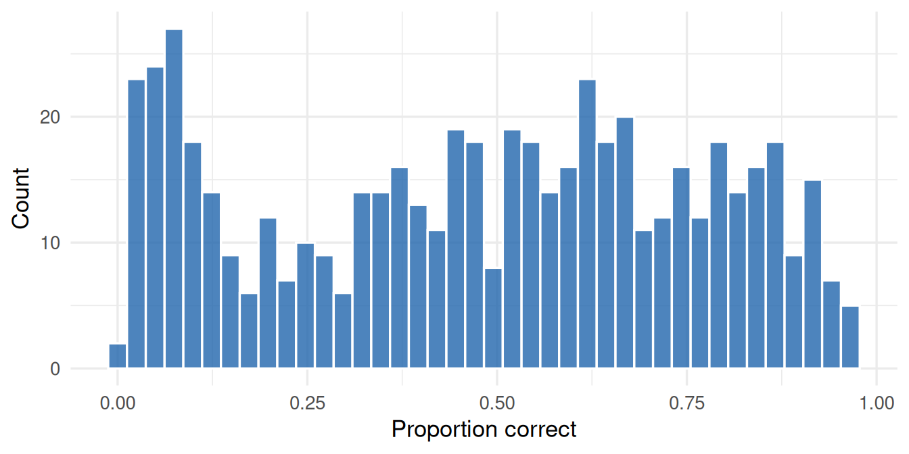
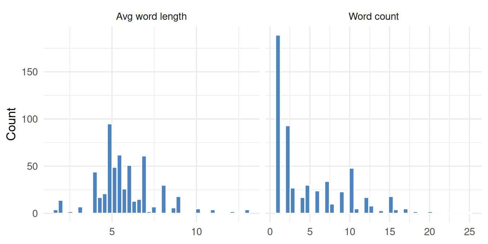
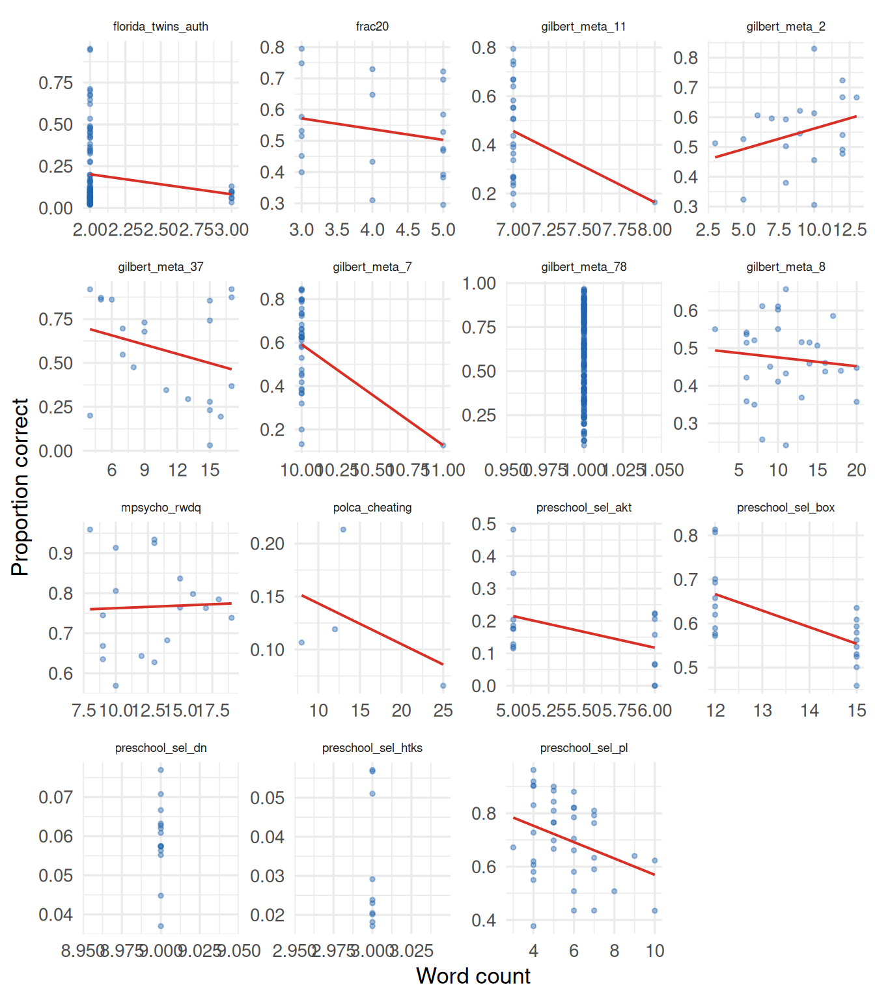

Code
text_tables <- irw_list_itemtext_tables()
meta <- irw_filter(
construct_type = "Cognitive/educational",
n_categories = 2,
n_participants = c(200, Inf),
primary_language = "eng"
)
eligible_tables <- intersect(text_tables, meta)A Tier 2 IRW vignette linking item text to empirical difficulty. We extract simple linguistic features from item text and ask how well they predict proportion correct across cognitive datasets.
July 22, 2026
Cognitive items vary enormously in difficulty. Some of that variation is substantive — harder content is harder to answer. But some may be linguistic: items written in more complex language, or containing negation, may be harder to process independent of their content. Can simple text features extracted from item wording predict how often respondents answer correctly?
The IRW’s item text layer makes this question tractable. For tables where both response data and item text are available, we can compute proportion correct per item, extract linguistic features, and ask how much variance those features explain.
We restrict to cognitive/educational dichotomous English tables that have item text available via irw_itemtext(). Not all IRW tables have item text — this analysis uses only those that do.
This yielded 18 tables (as of May 2026), covering 15 tables with usable item text after joining.
For each table we (1) fetch response data, (2) fetch item text, (3) compute proportion correct per item, and (4) join the two on the item identifier.
process_table <- function(table_name) {
df <- irw_fetch(table_name)
item_text <- irw_itemtext(table_name)
prop_correct <- df |>
mutate(resp = as.numeric(resp), item = as.character(item)) |>
group_by(item) |>
summarise(
prop_correct = mean(resp == 1, na.rm = TRUE),
n_resp = sum(!is.na(resp)),
.groups = "drop"
)
inner_join(prop_correct, item_text, by = "item") |>
mutate(table = table_name)
}We then extract two simple text features using base R:
| Feature | Description |
|---|---|
word_count |
Number of words |
avg_word_len |
Mean character length per word (excluding punctuation) |

all_data |>
pivot_longer(c(word_count, avg_word_len),
names_to = "feature", values_to = "value") |>
mutate(feature = recode(feature,
word_count = "Word count",
avg_word_len = "Avg word length"
)) |>
ggplot(aes(x = value)) +
geom_histogram(bins = 40, fill = irw_blue, colour = "white", alpha = 0.8) +
facet_wrap(~feature, scales = "free_x") +
labs(x = NULL, y = "Count")
Pooling all items together can be misleading — overall correlations between text features and difficulty are heavily influenced by which datasets happen to have longer or shorter items, not by within-instrument variation. Instead, we compute the correlation between each feature and proportion correct separately per dataset, then look at the distribution of those correlations across the 15 datasets.
| table | n_items | r_word_count | r_avg_wlen |
|---|---|---|---|
| florida_twins_auth | 100 | -0.15 | -0.45 |
| frac20 | 20 | -0.21 | 0.04 |
| gilbert_meta_11 | 24 | -0.30 | -0.06 |
| gilbert_meta_2 | 20 | 0.30 | 0.12 |
| gilbert_meta_37 | 21 | -0.29 | 0.16 |
| gilbert_meta_7 | 36 | -0.39 | -0.29 |
| gilbert_meta_78 | 189 | NA | -0.39 |
| gilbert_meta_8 | 29 | -0.11 | -0.03 |
| mpsycho_rwdq | 18 | 0.04 | -0.20 |
| polca_cheating | 4 | -0.45 | 0.92 |
| preschool_sel_akt | 17 | -0.42 | 0.04 |
| preschool_sel_box | 20 | -0.63 | -0.59 |
| preschool_sel_dn | 14 | NA | 0.61 |
| preschool_sel_htks | 10 | NA | NA |
| preschool_sel_pl | 39 | -0.33 | -0.23 |
within_long <- within_cors |>
pivot_longer(c(r_word_count, r_avg_wlen), names_to = "feature", values_to = "r") |>
mutate(
feature = recode(feature, r_word_count = "Word count", r_avg_wlen = "Avg word length"),
tooltip = paste0(
"Dataset: ", table,
"<br>r: ", r,
"<br>n_items: ", n_items
)
)
p <- ggplot(within_long, aes(x = r, y = feature, text = tooltip)) +
geom_vline(xintercept = 0, linetype = "dashed", colour = irw_grey) +
geom_jitter(height = 0.15, colour = irw_blue, alpha = 0.6) +
labs(x = "Within-dataset correlation with proportion correct", y = NULL)
ggplotly(p, tooltip = "text")ggplot(all_data, aes(x = word_count, y = prop_correct)) +
geom_point(alpha = 0.4, size = 0.9, colour = irw_blue) +
geom_smooth(method = "lm", se = FALSE, colour = irw_red, linewidth = 0.7) +
facet_wrap(~table, scales = "free") +
theme(strip.text = element_text(size = 7)) +
labs(x = "Word count", y = "Proportion correct")
Longer items could be harder (more to parse) or easier (more context provided). Looking within datasets, as above, avoids the confound that some instruments simply use longer items throughout — a pooled correlation across all items would just reflect which datasets happen to use longer or shorter wording.
Proportion correct conflates item difficulty with sample ability — a “hard” item in a high-ability sample can look easy, and vice versa. The natural next step is to use b parameters from the 2PL vignette instead, which are ability-adjusted. The text features here are also intentionally simple (word count, average word length); a real linguistic-complexity analysis would want features like negation, syntactic depth, or vocabulary rarity, which this vignette does not attempt.
Results computed on May 05, 2026 using 18 IRW tables. To reproduce: